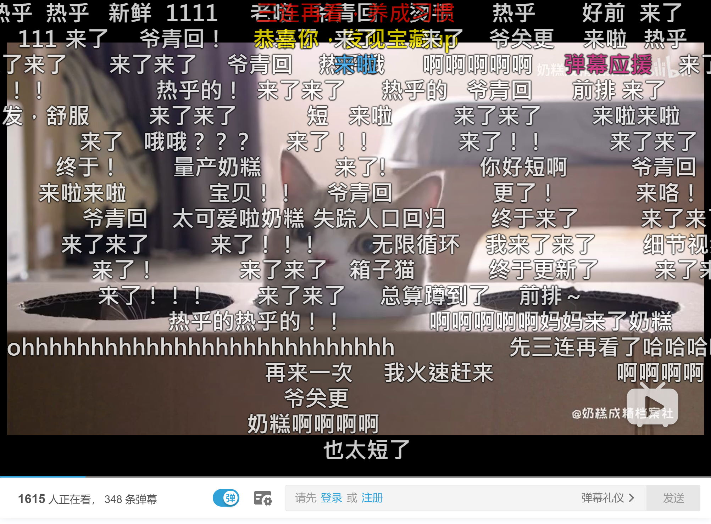

Media & Entertainment Interest Group
Welcome
Pierre-Anthony Lemieux
pal@sandflow.com
Co-chair of the IG
Supported by MovieLabs
Introduction
- Formed in 2011 as the Web & TV Interest Group
- Rechartered in 2017 as the Media & Entertainment Interest Group
- 52 member companies, including:
- browser vendors
- content providers
- media technology companies
- consumer electronics manufacturers
- network service providers
Activities
- Develop use cases, requirements, gap analysis for new media features on the web platform
- Review and provide media industry input on documents in development
- Collaboration and liaise with other orgnizations, e.g., SMPTE, MPEG, DASH-IF, CTA WAVE
Recent document reviews
- Client-side video editing API
- Web Codecs
- Specifications now in Media WG
- Media Session
- Picture In Picture
- Media Playback Quality
- Autoplay Policy Detection
- Revisions to Media Source Extensions (MSE) and Encrypted Media Extensions (EME)
Media Timed Events
- Interactive content overlays, rendered synchronized to audio or video playback
- Published IG Note on “Requirements for Media Timed Events”
- DataCue API proposal in WICG is being refined
- Active collaboration with DASH Industry Forum to establish architecture model for frame accurate video overlay rendering
Bullet Chatting / Danmu / Danmaku
- Popular in China and Japan on services such as Bilibili and Niconico
- Requirements and gap analysis for real time video comment overlays

Web-based media production
- As media production moves to the cloud, the need for web-based production tools increases
- Accurate media synchronization
- High-dynamic range and wide color gamut imaging
- Professional video codecs
- Real time video processing for effects and graphics compositing
- Lots of potential but little activity
- Seeking the right participants
Media player interoperability
- Improve interoperability of media players across devices
- Propose changes to W3C or WHATWG specs when appropriate
- Liaise with CTA WAVE
- Captures interoperability issues for web media players, particularly those with hardware audio and video decoders
- Accuracy of <audio> and <video> element currentTime reporting
- Handling contention over limited or shared resources
- Draft document “Web Media Integration Guidelines”